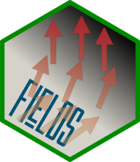
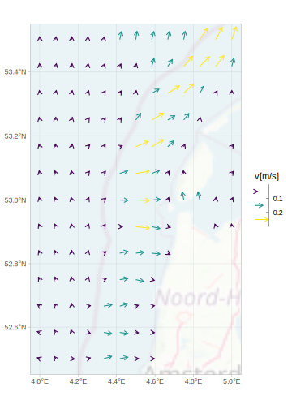

Overview

Add vector field layers to your ggplot2::ggplot(). Although it has similarities with ggplot2::geom_spoke(), ggfields offers some distinct features:
- The
radiusaesthetic is mapped to a scale and therefore can be added to the guides (seevignette("radius_aes")). - Not only
data.frames are supported, but also geometric data (sf::st_sf()andstars::st_as_stars()). - Corrects angles for displayed aspect ratio or coordinate system (see
vignette("angle_correction")).
Installation
Get CRAN version
install.packages("ggfields")Get development version on github
devtools::install_github('pepijn-devries/ggfields')Adding vector fields to a map
The example below shows how seawater current data can be added to a map:
data(seawatervelocity)
ggplot() +
ggspatial::annotation_map_tile(
alpha = 0.25,
cachedir = tempdir()) +
geom_fields(
data = seawatervelocity,
aes(radius = as.numeric(v),
angle = as.numeric(angle),
colour = as.numeric(v)),
max_radius = grid::unit(0.7, "cm")) +
labs(colour = "v[m/s]",
radius = "v[m/s]") +
scale_radius_binned() +
scale_colour_viridis_b(guide = guide_bins())
Simple data.frames
Vector arrows can also be added to simple plots with x and y data:
## First generate some arbitrary data to plot:
n <- 10
df <- data.frame(x = seq(0, 100, length.out = n), y = rnorm(n),
ang = seq(0, 2*pi, length.out = n))
df$len <- 2 + df$y + rnorm(n)/4
ggplot(df, aes(x = x, y = y)) +
geom_line() +
geom_fields(aes(angle = ang, radius = len), .angle_correction = NULL)